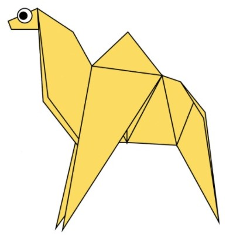
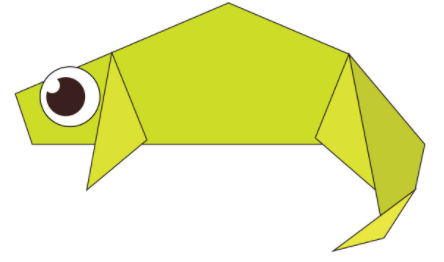
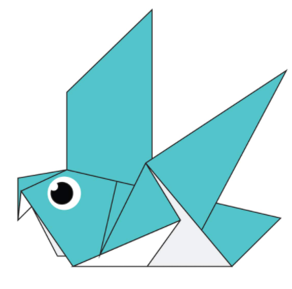
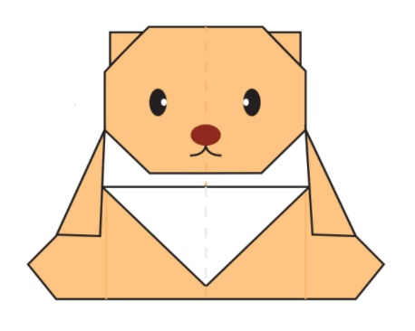

Orignal Designs
About Us
Follow Us

Facts
- Camels are famous for their humps
- Camels are mammals with long legs, a big-lipped snout
- Normal 'amble speed' for a walking camel is 5kph

Facts
- A chameleon is a very unique lizard that belongs to the Chamaeleonidae family
- They inhabit warm locations
- They are known to change colors

Facts
- Giant pandas have a distinctive black and white coat fur
- Their thick, wooly coat helps to keep them warm in their cool mountain homes
- They eat bamboos

Facts
- They are 32-37 cm long
- Have 64-72 cm wingspan
- Pigeons are gentle, plump, small-billed birds with a skin saddle (cere) between the bill and forehead.

Facts
- Modern teddy bears tend to have larger eyes and foreheads and smaller noses
- The best toy preffered by the small children
- Some teddy bears are also designed to represent different species of animals


Facts
- Cicada, (family Cicadidae), any of a group of sound-producing insects
- Have two pairs of membranous wings, prominent compound eyes, and three simple eyes
- Cicadas are medium to large in size